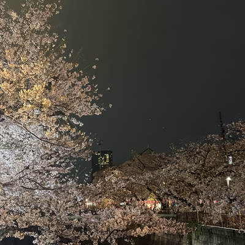
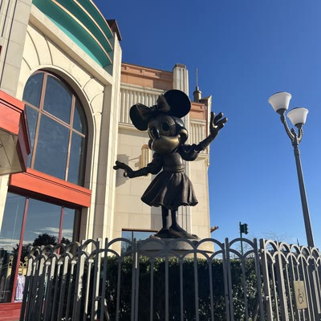
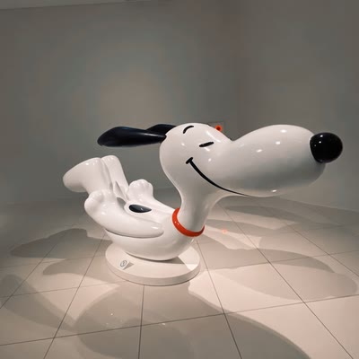
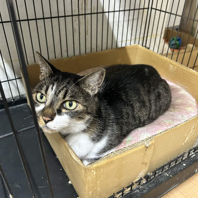
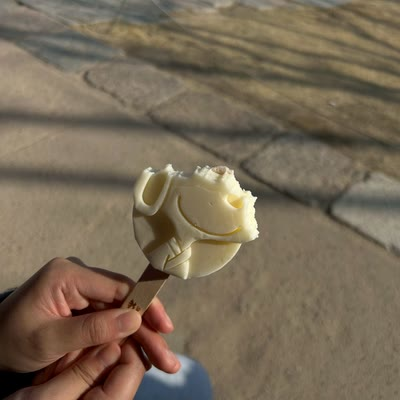

メンバー
教員1名・学部生8名（2026年10月現在）
教員
中 貴一 Kiichi NAKA
講師 ／ 博士（芸術工学）
2018年3月九州大学芸術工学部音響設計学科卒業，2023年3月九州大学芸術工学府博士後期課程修了。福岡大学・東京大学生産技術研究所・関西学院大学を経て，2025年4月より現職。専門は音響学・多感覚認知。
学部4年
-

石川 明梨
Akari ISHIKAWA -
竹下 奈摘
Natsumi TAKESHITA -

津川 未結
Miyu TSUGAWA -

前川 暖花
Honoka MAEKAWA
学部3年
-
宇都宮 一花
Ichika UTSUNOMIYA -

鈴木 粋生
Inase SUZUKI -

中尾 友香
Tomoka NAKAO -
藤田 昂希
Koki FUJITA